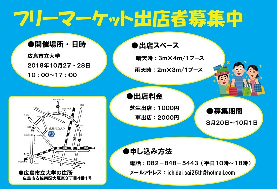

第27回 市大祭
第27回 市大祭募集要項

出店日時
2020年10月24日10:00~17:00
2020年10月25日10:00~17:00
出店場所
| 芝生出店 | 車出店 | |
| 晴天時 | 屋外(1ブース: 3m × 4m) | 屋外(店舗兼倉庫として車を駐車するスペース+車1台に隣接する区画1ブース: 3m × 4m) |
| 雨天時 | 屋内(1ブース: 2m × 3m) | 屋内(1ブース: 4m × 6m) |
出店料金 (１日当たり)
| 新規出店者 | 芝生出店￥1,000 車出店￥2,000 |
|---|---|
| 学内・リピーター出店者 | 芝生出店￥800 車出店￥1,600 |
販売禁止物
| 法律に反する物品 | 盗品、薬物類、銃剣、海賊版のCD・DVDなど法律に反するものや、 ポルノ雑誌やビデオ等の社会的に好ましくないと思われる物品の販売はできません. |
|---|---|
| 物品を伴わないサービス | マッサージや占いなど、物品の伴わないサービスの販売はできません. ただし、ネイルアートのみサービスが形として残るため、例外とします. |
| 宗教関係の物品販売 | 宗教の布教を目的とした販売、活動はお断りいたします. ただし、布教を目的としない民族工芸等の販売は例外とします. |
| 飲食物 | 食品衛生上の問題があるため、飲食物の販売はできません. |
| 動植物 | ペット、生き物の販売はできません.ただし、観葉植物のみ販売可能です. |
| その他 | 当委員会でフリーマーケットに不適切と判断したものは、販売できません. |
注意事項
当日に出店形式・ブースの変更はできません.
テーブル、パラソル、シート等の貸し出しは一切しません.各自でご持参ください.
会場、駐車場内での盗難、万引き、紛失等に関しましては当委員会では一切責任を負いかねます
実行委員会による見回りも行っておりますが、各自で十分ご注意ください.
ペット等、生き物のご同伴はご遠慮願います.ただし聴導犬、盲導犬、介助犬等の訓練犬は例外とします.
大学敷地内は全面喫煙禁止となっております.
出店者様の個人情報は大学祭での利用目的以外では使用致しません.
家電製品等は動作確認をし、必ず連絡先を添付しての販売をお願いします.